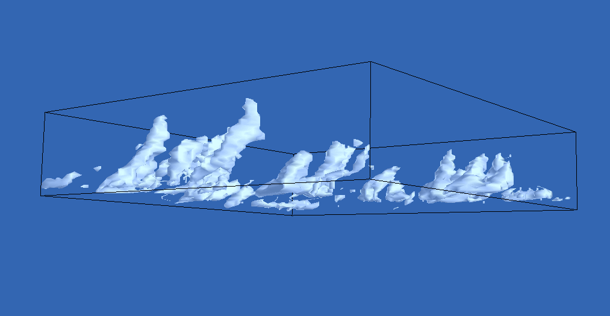

Welcome
This page documents current and past projects on boundary layer clouds that
come under the GASS umbrella (and
formerly the GCSS (GEWEX Cloud System Study)
Boundary Layer Cloud Working Group. The aims remain to improve physical
parameterizations of clouds and cloud related processes, and their interactions.
We conduct careful intercomparisons between observational or laboratory
case studies, 3D large-eddy-simulation models, single-column-model
(SCM) versions of climate and numerical weather prediction (NWP) models
of cloud-topped boundary layers. Most of the leading groups modelling
boundary layer clouds have participated in these projects which have been
running for nearly 20 years (see the summary of
past cases).
GASS boundary layer cloud projects are currently coordinated by
Adrian Lock of the Met Office, UK.
How to join
If you would like to keep in touch with GASS activities, you can join the email
list. Instructions on how to do this are
here. Old
announcements!
| In future all announcements will appear via the GASS pages | |
| 22nd February 2011 | Announcement of a radiation intercomparison for stratocumulus clouds |
| 18th October 2010 (updated 22nd Feb) |
Announcement of the
next group meeting, which will be joint with CFMIP and the EUCLIPSE
project at the Met Office in Exeter during the week of
6th-10th June, 2011. It will include discussion of the
ongoing intercomparison cases, CGILS, the stratocumulus to cumulus transitions and the radiation intercomparison
|
Current GASS BL cloud activities
-
Stratocumulus to shallow cumulus transitions
- Case coordinators: Stephan de Roode at the Delft University of Technology and Irina Sandu and Bjorns Stevens at MPI
- There are two separate cases with the following specifications:
- First discussions of results is alongside the EUCLIPSE meeting in September 2010, with more results and discussion at the June 2011 Exeter joint meeting with CFMIP and EUCLIPSE
- Case coordinator: Minghua Zhang of Stony Brook University, NY
- Case specifications.
- First discussions of results at the joint meeting with CFMIP, 8th - 12th June 2009, at the University of British Columbia in Vancouver
- Focussed workshops 1st-2nd March 2010 and 29th-30th Sept 2010
- Summary of progress written up in May 2010 GEWEX news article
- Further discussion at the June 2011 Exeter joint meeting with CFMIP and EUCLIPSE
- Case coordinator: Sara Dal Gesso at KNMI
- Case description: the main objective is to quantify the intermodel spread in albedo for typical marine stratocumulus arising purely from the radiative transfer code.
- First discussion of results will be at the CFMIP/GCSS/EUCLIPSE Meeting on Cloud Processes and Climate Feedbacks , The Met Office, Exeter, United Kingdom, 6th-10th June, 2011.
EUCLIPSE-GCSS Intercomparison of Large-Eddy and Single-Column Models
CFMIP-GCSS Intercomparison of Large-Eddy and Single-Column Models
EUCLIPSE intercomparison study of radiative fluxes in stratocumulus
Related links to current GEWEX activities
- GABLS (the GEWEX Atmospheric Boundary Layer Study), whose mission is to coordinate research on boundary layer physics to improve the representation of the atmospheric boundary layer in numerical models.
- GPCI (the GCSS Pacific Cross-Section Intercomparison), which is comparing the observed thermodynamic structure and clouds along a vertical cross-section from the California coast to the central Pacific ITCZ during July 1998 and 2003 with simulations from regional and global simulations.
- An Ad Hoc activitity called DIME has the goal to provide "test kits" for model evaluation based on the GCSS Model Intercomparison Projects, including detailed results from the participating Cloud Resolving Models. William Rossow, NASA, GISS, is the chairperson.